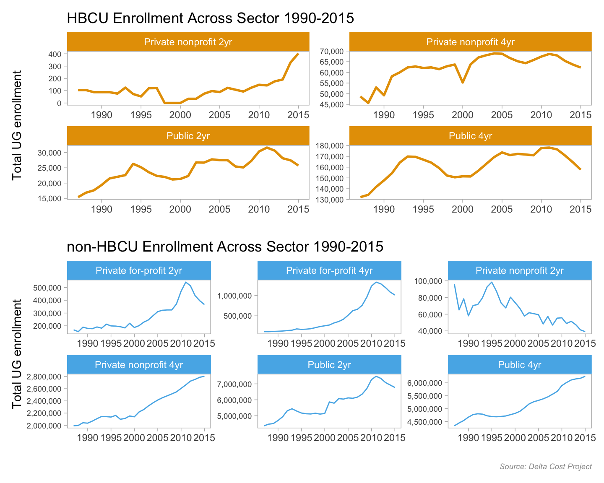

# load packages
library(tidytuesdayR) # load the tidy tuesday data
library(tidyverse) # to do tidyverse things
library(tidylog) # to get a log of what's happening to the data
library(janitor) # tools for data cleaning
library(patchwork) # to stitch together plots
library(ggtext) # helper functions for ggplot
library(ggrepel) # helper functions for ggplotWhen the the Tidy Tuesday HBCU dataset was posted I got excited because here was something right in my scope of knowledge; enrollment in higher education. It was a great first Tidy Tuesday set for Black History Month. To keep this from being a journal-length piece, I won’t put on my history of higher ed teacher hat & get into how HBCUs came to be. Here’s a good overview.
One of my strengths as a data analyst is a brain that’s constantly asking questions of a dataset:
* what’s in there?
* what relationships exist between variables?
* what I can add to the dataset to glean more insight?
For Tidy Tuesday though that slows things down – it’s mostly meant to be a quick turnaround thing where you share results to Twitter. So my deep-dive habits mean I’m usually a bit behind getting Tidy Tuesday analysis done the week the data are posted. My goal for this analysis is to show:
* changes over time in the racial and gender make-up of students at HBCUs
* changes over time in overall enrollment at HBCUs by sector (public 4yr, private 4y, etc), relative to non-HBCUs
* changes over time in tuition & fees by sector, HBCUs vs non-HBCUs
The Tidy Tuesday data has some of what I need - it comes from Data.World via IPEDS (essentially the US Department of Education’s higher ed data library) . I’m supplementing it with data from the Delta Cost Project, which aggrgated years worth of data from IPEDS.
So let’s dive into the data.
First we load the packages we’ll be using…
…then lets make a couple of things we’ll use a lot going forward.
# create notin operator to help with cleaning & analysis
`%notin%` <- negate(`%in%`)
# function for year-over-year percent changes
pctchange <- function(x) {
(x - lag(x)) / lag(x)
}Now we’ll load the sets from TidyTuesday and then the Delta Cost Project files.
I’ll load the Tidy Tuesday data objects via the tidytuesdayR package and clean up the data. This week’s data came in a few separate files. For my analysis I need a dataframe of HBCU enrollments with Black and non-Black students. So I need to combine the two HBCU enrollment files (one each for Black students and all students) into one and subtract Black from All to get non-Black. I’ll show code for loading the Black student set in, cleaning it up a bit, and skip to the subtraction & joins. For the full code experience, head to my Tidy Tuesday repo
show tt_hbcu_black data load & cleaning code
tt_hbcu_load <- tt_load("2021-02-02")
tt_hbcu_black <- as_tibble(tt_hbcu_load$hbcu_black) %>%
clean_names() %>%
mutate(year = as.character(year)) %>%
mutate(ethnicity = "Black") %>%
select(year, ethnicity, enroll_n = total_enrollment, women = females, men = males,
four_year_all = x4_year, two_year_all = x2_year,
total_public, four_year_pub = x4_year_public, two_year_pub = x2_year_public,
total_private, four_year_pri = x4_year_private, two_year_pri = x2_year_private) show tt_hbcu_all data load & cleaning code
tt_hbcu_all <- as_tibble(tt_hbcu_load$hbcu_all) %>%
clean_names() %>%
mutate(ethnicity = "All") %>%
mutate(year = as.character(year)) %>%
select(year, ethnicity, enroll_n = total_enrollment, women = females, men = males,
four_year_all = x4_year, two_year_all = x2_year,
total_public, four_year_pub = x4_year_public, two_year_pub = x2_year_public,
total_private, four_year_pri = x4_year_private, two_year_pri = x2_year_private) Let’s join tt_hbcu_black with tt_hbcu_all and create the non-Black ethnicity group. There is probably a better way to do the subtractions programmatically with a function but my r skills aren’t there yet. The final dataframes I’ll use for plots are tt_hbcu_enr_eth_sex & tt_hbcu_enr_eth_sect. Because of the way the source data was arrayed I could do ethnicty by gender and ethnicity by sector but not all three vectors. So, two sets…
show dataframe join code
tt_hbcu_notblack = as.data.frame(tt_hbcu_all) %>%
select(-ethnicity) %>%
# renaming multiple columns in one line of code!
rename_with(~ paste(.x, "all", sep = "_"), .cols = (2:12)) %>%
bind_cols(tt_hbcu_black) %>%
select(-year...13, -ethnicity) %>%
rename(year = year...1) %>%
# the subtractions by column to get non-black. again, might be a better way to do it w/ a function.
mutate(enroll_n_nb = enroll_n_all - enroll_n) %>%
mutate(women_nb = women_all - women) %>%
mutate(men_nb = men_all - men) %>%
mutate(four_year_all_nb = four_year_all_all - four_year_all) %>%
mutate(two_year_all_nb = two_year_all_all - two_year_all) %>%
mutate(total_public_nb = total_public_all - total_public) %>%
mutate(four_year_pub_nb = four_year_pub_all - four_year_pub) %>%
mutate(two_year_pub_nb = two_year_pub_all - two_year_pub) %>%
mutate(total_private_nb = total_private_all - total_private) %>%
mutate(four_year_pri_nb = four_year_pri_all - four_year_pri) %>%
mutate(two_year_pri_nb = two_year_pri_all - two_year_pri) %>%
mutate(ethnicity = "Not Black") %>%
select(year, ethnicity, enroll_n_nb:two_year_pri_nb) %>%
rename_with(~ str_remove(.x, "_nb"), .cols = (3:13))
# create final dataframes, turn wide to long
# note sex pct is by eth group
tt_hbcu_enr_eth_sex = as.data.frame(rbind(tt_hbcu_all, tt_hbcu_black)) %>%
rbind(tt_hbcu_notblack) %>%
select(-four_year_all:-two_year_pri) %>%
arrange(year, ethnicity) %>%
group_by(year) %>%
mutate(enroll_eth_pct = enroll_n / first(enroll_n)) %>%
ungroup() %>%
pivot_longer(cols = women:men,
names_to = "sex",
values_to = "sex_n") %>%
arrange(year, ethnicity) %>%
group_by(year, ethnicity) %>%
mutate(enroll_sex_pct = sex_n / sum(sex_n)) %>%
ungroup() %>%
select(year, ethnicity, enroll_n, enroll_eth_pct, sex, sex_n, enroll_sex_pct) %>%
arrange(year, ethnicity, sex)
# note pct_sect_eth is by eth group by year, pct_eth_sect is pct eth w/in sector
tt_hbcu_enr_eth_sect = rbind(tt_hbcu_all, tt_hbcu_black) %>%
rbind(tt_hbcu_notblack) %>%
select(-women, -men) %>%
arrange(year, ethnicity) %>%
pivot_longer(cols = four_year_all:two_year_pri,
names_to = "sector",
values_to = "sector_n") %>%
arrange(year, ethnicity) %>%
mutate(pct_sect_eth = sector_n / enroll_n) %>%
arrange(year, sector) %>%
group_by(year, sector) %>%
mutate(pct_eth_sect = sector_n / (sum(sector_n) /2)) %>%
ungroup()Ok, the Tidy Tuesday data is sorted, so let’s use the haven package load in the Delta Cost Project (DCP) data they provided as SAS files.
They’ve split their data into two files, one from 1987 to 1999 and one from 2000 to 2015. There’s a ton of data in the set, but all I want for this analysis is enrollments and tuition - I’ll pull those fields from each set, then rbind together into a dataframe called tuitenr_8715_agg for year-over-year by-sector analysis. Unfortunately while DCP has enrollment by ethnicity, they only do it for total enrollment - grad and undergrad combined - so I can’t do some of the HBCU vs non-HBCU comparisons. There are other sources which I’ll describe at the end of the post.
Ok, loading the 2000 to 2015 data…
show DCP 2000 - 2015 load code
delta0015all <- (haven::read_sas("~/Data/ipeds/delta_public_release_00_15.sas7bdat", NULL))
delta0015_tuitenr <- delta0015all %>%
filter(between(sector_revised, 1, 6)) %>%
mutate(sector_desc = case_when(sector_revised == 1 ~ "Public 4yr",
sector_revised == 2 ~ "Private nonprofit 4yr",
sector_revised == 3 ~ "Private for-profit 4yr",
sector_revised == 4 ~ "Public 2yr",
sector_revised == 5 ~ "Private nonprofit 2yr",
sector_revised == 6 ~ "Private for-profit 2yr")) %>%
# mutate(total_undergraduates = ifelse(is.na(total_undergraduates), 0, total_undergraduates)) %>%
select(unitid, instname, sector_revised, sector_desc, hbcu,
year = academicyear, tuition_fee_ug_in = tuitionfee02_tf,
tuition_fee_ug_oos = tuitionfee03_tf,
total_undergraduates)Now let’s load the 1987 to 1999 data…
show DCP 1987 - 1999 load code
delta8799all <- (haven::read_sas("~/Data/ipeds/delta_public_release_87_99.sas7bdat", NULL))
delta8799_tuitenr <- as_tibble(delta8799all) %>%
filter(between(sector_revised, 1, 6)) %>%
mutate(sector_desc = case_when(sector_revised == 1 ~ "Public 4yr",
sector_revised == 2 ~ "Private nonprofit 4yr",
sector_revised == 3 ~ "Private for-profit 4yr",
sector_revised == 4 ~ "Public 2yr",
sector_revised == 5 ~ "Private nonprofit 2yr",
sector_revised == 6 ~ "Private for-profit 2yr")) %>%
# mutate(total_undergraduates = ifelse(is.na(total_undergraduates), 0, total_undergraduates)) %>%
select(unitid, instname, sector_revised, sector_desc, hbcu,
year = academicyear, tuition_fee_ug_in = tuitionfee02_tf,
tuition_fee_ug_oos = tuitionfee03_tf,
total_undergraduates)…and let’s join and munge the DCP files…
show DCP join & clean code
tuitenr_8715 <- rbind(delta0015_tuitenr, delta8799_tuitenr)
tuitenr_8715_agg <-
tuitenr_8715 %>%
# filter(!sector_desc == "Private for-profit 2yr" &
# !sector_desc == "Private for-profit 4yr") %>%
# filter(!is.na(tuition_fee_ug_in)) %>%
group_by(year, sector_desc, hbcu) %>%
summarise(enr_tot = sum(total_undergraduates, na.rm = TRUE),
mean_tuit_in = mean(tuition_fee_ug_in, na.rm = TRUE),
mean_tuit_oos = mean(tuition_fee_ug_oos, na.rm = TRUE)
) %>%
mutate(level = ifelse(str_detect(sector_desc, "2yr"), "2yr", "4yr")) %>%
# summarise(mean_tuit_in = mean(tuition_fee_ug_in, na.rm = T)) %>%
ungroup() %>%
mutate(hbcu_f = ifelse(hbcu == 1, "HBCU", "Not HBCU")) %>%
mutate(hbcu_f = factor(hbcu_f, levels = c("HBCU", "Not HBCU"))) Because I’ll be doing some year-over-year percent change analysis, I’ll create a separate dataframe from tuitenr_8715_agg (the DCP data) so I can compare HBCU to non-HBCU changes by year.
Remember the pctchange function I created when I loaded the packages? Here it’s put to good use. I’ll only show code for one of the frames - I created frames for each sector, HBCU and non-HBCU. The final data set will rbind 10 frames into tuit_8715_pctchgh. BTW, this is another example of when I wish I were a bit better at purrr/mapping and functions so I could have done it with less code.
Since the data provided starts in 1987, I’ll filter that year out of the dataframes.
tuit_8715_pctchgh1 <- tuitenr_8715_agg %>%
filter(hbcu == 1, sector_desc == "Public 4yr") %>%
select(year, hbcu, sector_desc, enr_tot, mean_tuit_in, mean_tuit_oos) %>%
arrange(year) %>%
mutate(across(4:6, pctchange)) %>%
select(year, hbcu, sector_desc, everything()) %>%
ungroup() %>%
filter(year > 1987)show the remaining sector files code
tuit_8715_pctchgh2 <- tuitenr_8715_agg %>%
filter(hbcu == 1, sector_desc == "Private nonprofit 4yr") %>%
select(year, hbcu, sector_desc, enr_tot, mean_tuit_in, mean_tuit_oos) %>%
arrange(year) %>%
mutate(across(4:6, pctchange)) %>%
select(year, hbcu, sector_desc, everything()) %>%
ungroup() %>%
filter(year > 1987)
tuit_8715_pctchgh3 <- tuitenr_8715_agg %>%
filter(hbcu == 1, sector_desc == "Public 2yr") %>%
select(year, hbcu, sector_desc, enr_tot, mean_tuit_in, mean_tuit_oos) %>%
arrange(year) %>%
mutate(across(4:6, pctchange)) %>%
select(year, hbcu, sector_desc, everything()) %>%
ungroup() %>%
filter(year > 1987)
tuit_8715_pctchgh4 <- tuitenr_8715_agg %>%
filter(hbcu == 1, sector_desc == "Private nonprofit 2yr") %>%
select(year, hbcu, sector_desc, enr_tot, mean_tuit_in, mean_tuit_oos) %>%
arrange(year) %>%
mutate(across(4:6, pctchange)) %>%
select(year, hbcu, sector_desc, everything()) %>%
ungroup() %>%
filter(year > 1987)
tuit_8715_pctchgh5 <- tuitenr_8715_agg %>%
filter(hbcu == 2, sector_desc == "Public 4yr") %>%
select(year, hbcu, sector_desc, enr_tot, mean_tuit_in, mean_tuit_oos) %>%
arrange(year) %>%
mutate(across(4:6, pctchange)) %>%
select(year, hbcu, sector_desc, everything()) %>%
ungroup() %>%
filter(year > 1987)
tuit_8715_pctchgh6 <- tuitenr_8715_agg %>%
filter(hbcu == 2, sector_desc == "Private nonprofit 4yr") %>%
select(year, hbcu, sector_desc, enr_tot, mean_tuit_in, mean_tuit_oos) %>%
arrange(year) %>%
mutate(across(4:6, pctchange)) %>%
select(year, hbcu, sector_desc, everything()) %>%
ungroup() %>%
filter(year > 1987)
tuit_8715_pctchgh7 <- tuitenr_8715_agg %>%
filter(hbcu == 2, sector_desc == "Public 2yr") %>%
select(year, hbcu, sector_desc, enr_tot, mean_tuit_in, mean_tuit_oos) %>%
arrange(year) %>%
mutate(across(4:6, pctchange)) %>%
select(year, hbcu, sector_desc, everything()) %>%
ungroup() %>%
filter(year > 1987)
tuit_8715_pctchgh8 <- tuitenr_8715_agg %>%
filter(hbcu == 2, sector_desc == "Private nonprofit 2yr") %>%
select(year, hbcu, sector_desc, enr_tot, mean_tuit_in, mean_tuit_oos) %>%
arrange(year) %>%
mutate(across(4:6, pctchange)) %>%
select(year, hbcu, sector_desc, everything()) %>%
ungroup() %>%
filter(year > 1987)
tuit_8715_pctchgh9 <- tuitenr_8715_agg %>%
filter(hbcu == 2, sector_desc == "Private for-profit 4yr") %>%
select(year, hbcu, sector_desc, enr_tot, mean_tuit_in, mean_tuit_oos) %>%
arrange(year) %>%
mutate(across(4:6, pctchange)) %>%
select(year, hbcu, sector_desc, everything()) %>%
ungroup() %>%
filter(year > 1987)
tuit_8715_pctchgh10 <- tuitenr_8715_agg %>%
filter(hbcu == 2, sector_desc == "Private for-profit 2yr") %>%
select(year, hbcu, sector_desc, enr_tot, mean_tuit_in, mean_tuit_oos) %>%
arrange(year) %>%
mutate(across(4:6, pctchange)) %>%
select(year, hbcu, sector_desc, everything()) %>%
ungroup() %>%
filter(year > 1987)
tuit_8715_pctchgh <- rbind(tuit_8715_pctchgh1, tuit_8715_pctchgh2) %>%
rbind(tuit_8715_pctchgh3) %>%
rbind(tuit_8715_pctchgh4) %>%
rbind(tuit_8715_pctchgh5) %>%
rbind(tuit_8715_pctchgh6) %>%
rbind(tuit_8715_pctchgh7) %>%
rbind(tuit_8715_pctchgh8) %>%
rbind(tuit_8715_pctchgh9) %>%
rbind(tuit_8715_pctchgh10) Ok, the data is in place, let’s see what it tells us! I’ll fold the code for the more basic charts, click on the arrow to see it. You’ll note that this analysis is mostly line graphs. That’a because I’m mostly doing trend analysis, and I like line graphs for time series.
First up we’ll use the Tidy Tuesday data to look at HBCU enrollment by ethnicity (Black and non-Black) from 1990 to 2015. What do we see? Overall, periods of increase and decrease in total enrollment. But interestingly we see that non-Black enrollment kept increasing, even as Black enrollment started to drop. Of course Black students make up a vast majority of HBCU enrollment, so their trends drive overall numbers. It is worth noting though that the changes started in the 2010s, coinciding with changes in how NCES counted ethncity. It’s beyond the scope of this quick (ha) analysis, but worth digging deeper to see the effect of changes on the ethnic mix of HBCUs.
show the enrollment by ethnicity line charts code
## tt hbcu data, black men v women over time
tt_hbcu_enr_eth_sex %>%
filter(year > 1989) %>%
ggplot(aes(year, enroll_n, group = 1)) +
geom_line(color = "#E69F00", size = 1) +
scale_y_continuous(labels = scales::comma_format(), breaks = scales::pretty_breaks()) +
scale_x_discrete(breaks = scales::pretty_breaks()) +
facet_grid(ethnicity ~ ., scales = "free_y") +
labs(title = "Black Enrollment at HBCUs Rising & Falling Since 1990",
subtitle = "Non-Black enrollment slowly & streadily increasing",
caption = "Source: Tidy Tuesday data",
x = "", y = "Total UG Enrollment") +
theme_light() +
theme(panel.grid.major = element_blank(), panel.grid.minor = element_blank(),
panel.background = element_blank(), strip.background = element_rect(fill = "#E69F00"),
plot.subtitle = element_text(color = "#E69F00", face = "italic", size = 9),
plot.caption = element_text(color = "#999999", face = "italic", size = 7))show the enrollment by ethnicity line charts code
tt_hbcu_enr_eth_sex %>%
filter(year > 1989) %>%
filter(ethnicity == "Black") %>%
distinct(year, ethnicity, .keep_all = T) %>%
ggplot(aes(year, enroll_eth_pct, group = 1)) +
geom_line(color = "#E69F00", size = 1.25) +
scale_y_continuous(limits = c(.5, 1),
labels = scales::percent_format()) +
scale_x_discrete(breaks = scales::pretty_breaks()) +
labs(title = "Slight Decrease Over Time in Percentage of Black Students Enrolled at HBCUs",
subtitle = "Might be due to changes in how ethnicity is coded by US Dept of Ed",
caption = "Source: Tidy Tuesday data",
x = "", y = "Pct Black students") +
theme_light() +
theme(panel.grid.major = element_blank(), panel.grid.minor = element_blank(),
panel.background = element_blank(),
plot.title = element_text(size = 11),
plot.subtitle = element_text(color = "#E69F00", face = "italic", size = 9),
plot.caption = element_text(color = "#999999", face = "italic", size = 7))Next let’s look at enrollment by ethnicity & sex. HBCU enrollment mirrors that of higher ed enrollment in general - since the early 1980s women outnumber men. There are differences by sector (4-year, 2-year, public & private) and field of study but the oveall trend has been consistent. We do see that for non-Black students at HBCUs the percentage of women is a bit less than that of Black students.
show the enrollment by ethnicity & sex line charts code
tt_hbcu_enr_eth_sex %>%
filter(year > 1989) %>%
ggplot(aes(year, sex_n, group = 1)) +
geom_line(color = "#E69F00", size = 1) +
scale_y_continuous(labels = scales::comma_format()) +
# scale_y_continuous(limits = c(0, 250000),
# breaks = c(0, 50000, 100000, 150000, 200000, 250000),
# labels = scales::comma_format()) +
scale_x_discrete(breaks = scales::pretty_breaks()) +
labs(title = "Black Women Enroll in Higher Numbers Than Men at HBCUs",
subtitle = "Same Pattern as Overall Undergrad Enrollments in the US",
caption = "Source: Tidy Tuesday data",
x = "", y = "Total UG Enrollment") +
facet_grid(ethnicity ~ sex, scales = "free_y") +
theme_light() +
theme(panel.grid.major = element_blank(), panel.grid.minor = element_blank(),
panel.background = element_blank(), strip.background = element_rect(fill = "#E69F00"),
plot.subtitle = element_text(color = "#E69F00", face = "italic", size = 9),
plot.caption = element_text(color = "#999999", face = "italic", size = 7))show the enrollment by ethnicity & sex line charts code
# sex - women as pct
tt_hbcu_enr_eth_sex %>%
filter(year > 1989) %>%
filter(sex == "women") %>%
ggplot(aes(year, enroll_sex_pct, group = 1)) +
geom_line(color = "#E69F00", size = 1) +
scale_y_continuous(limits = c(.5, .8),
labels = scales::percent_format()) +
scale_x_discrete(breaks = scales::pretty_breaks()) +
labs(title = "Women a Greater Percentage of those Enrolled at HBCUs",
subtitle = "Slightly higher among Black students than not Black",
caption = "Source: Tidy Tuesday data",
x = "", y = "Pct Women enrolled") +
facet_grid(ethnicity ~ ., scales = "free_y") +
theme_light() +
theme(panel.grid.major = element_blank(), panel.grid.minor = element_blank(),
panel.background = element_blank(), strip.background = element_rect(fill = "#E69F00"),
plot.subtitle = element_text(color = "#E69F00", face = "italic", size = 9),
plot.caption = element_text(color = "#999999", face = "italic", size = 7))The next thing I want to look at is enrollment by sector for HBCUs. In this case we think of sectors along two axes - public and private, and 2-year (community/junior colleges) vs 4-year (baccalaureate granting). What these first two sector charts show us is that most HBCU enrollment is in publics and in 4-year schools. Given the land-grant history of most HBCUs, that makes sense.
I am leaving in the code for the first chart to highlight how one can a) have two different colored lines within the same chart in a faceted visualization (the scale_color_manual call) and b) use the amazing ggtext package to get two different colors of text in the subtitle line, so it does the work of a legend. The <span style = </span> and the element_markdown call in the theme specification is how you make it happen.
The third chart takes a slightly different view of the data, looking at percent of enrollment by sector within each of the ethnic categories we have in the data, Black and not-Black. What the first two charts showed is confirmed here - that Black students in HBCUs are mostly in public 4-years, and that trend has held steady since at least 1990.
tt_hbcu_enr_eth_sect %>%
filter(year > 1989) %>%
filter(ethnicity %in% c("Black", "Not Black")) %>%
filter(sector %in% c("total_private", "total_public")) %>%
ggplot(aes(year, pct_sect_eth, group = sector, color = sector)) +
geom_line(size = 1) +
scale_color_manual(values = c("#56B4E9", "#E69F00")) +
scale_x_discrete(breaks = scales::pretty_breaks()) +
scale_y_continuous(labels = scales::percent_format(),
limits = c(0, 1), breaks = c(0, .25, .5, .75, 1)) +
labs(title = "Public HBCUs Enroll Greater Pct of Students ",
subtitle = "Greater Pct Black students in Private HBCU than non-Black students;
<span style = 'color:#56B4E9;'>Blue = Public</span>
<span style = 'color:#E69F00;'>Orange = Private</span>",
caption = "Source: Tidy Tuesday data",
x = "", y = "Percent by Publc & Private HBCUs") +
facet_grid(ethnicity ~ .) +
theme_light() +
theme(panel.grid.major = element_blank(), panel.grid.minor = element_blank(),
legend.position = "none",
panel.background = element_blank(), strip.background = element_rect(fill = "#E69F00"),
plot.subtitle = element_markdown(size = 8, face = "italic"),
plot.caption = element_text(color = "#999999", face = "italic", size = 7))show the enrollment by ethnicity & sector charts code
tt_hbcu_enr_eth_sect %>%
filter(year > 1989) %>%
filter(ethnicity %in% c("Black", "Not Black")) %>%
filter(sector %in% c("four_year_all", "two_year_all")) %>%
ggplot(aes(year, pct_sect_eth, group = sector, color = sector)) +
geom_line(size = 1) +
scale_color_manual(values = c("#56B4E9", "#E69F00")) +
scale_x_discrete(breaks = scales::pretty_breaks()) +
scale_y_continuous(labels = scales::percent_format(),
limits = c(0, 1), breaks = c(0, .25, .5, .75, 1)) +
labs(title = "4-year HBCUs Enroll ~ 90% of all Students",
subtitle = "Black students more likely to be in 4-year HBCU than non-Black students;
<span style = 'color:#56B4E9;'>Blue = 4-year</span>
<span style = 'color:#E69F00;'>Orange = 2-year</span>",
caption = "Source: Tidy Tuesday data",
x = "", y = "Percent by 4yr & 2yr HBCUs") +
facet_grid(ethnicity ~ .) +
theme_light() +
theme(panel.grid.major = element_blank(), panel.grid.minor = element_blank(),
legend.position = "none",
panel.background = element_blank(), strip.background = element_rect(fill = "#E69F00"),
plot.subtitle = element_markdown(size = 8, face = "italic"),
plot.caption = element_text(color = "#999999", face = "italic", size = 7))show the enrollment by ethnicity & sector charts code
tt_hbcu_enr_eth_sect %>%
filter(year > 1989) %>%
filter(ethnicity %in% c("Black", "Not Black")) %>%
filter(sector %in% c("four_year_pub", "four_year_pri", "two_year_pri", "two_year_pub")) %>%
mutate(sector = str_replace(sector, "four_year_pub", "4 Year Public")) %>%
mutate(sector = str_replace(sector, "two_year_pub", "2 Year Public")) %>%
mutate(sector = str_replace(sector, "four_year_pri", "4 Year Private")) %>%
mutate(sector = str_replace(sector, "two_year_pri", "2 Year Private")) %>%
# ggplot(aes(year, enroll_sect_pct, group = sector, color = sector)) +
ggplot(aes(year, pct_sect_eth, group = 1)) +
geom_line(color = "#E69F00", size = 1) +
scale_x_discrete(breaks = scales::pretty_breaks()) +
scale_y_continuous(labels = scales::percent_format(),
limits = c(0, 1), breaks = c(0, .25, .5, .75, 1)) +
labs(title = "Black Students most likely to be in 4-year HBCUs",
subtitle = "Non-black students moving to 2-year HBCUs from 4-yr;
<span style = 'color:#E69F00;'>Percents sum to 100% across ethnic groups</span>",
caption = "Source: Tidy Tuesday data",
x = "", y = "Percent by Sector") +
facet_grid(ethnicity ~ sector) +
theme_light() +
theme(panel.grid.major = element_blank(), panel.grid.minor = element_blank(),
legend.position = "none",
panel.background = element_blank(), strip.background = element_rect(fill = "#E69F00"),
axis.text.x = element_text(size = 6),
plot.subtitle = element_markdown(face = "italic", size = 9),
plot.caption = element_text(color = "#999999", face = "italic", size = 7))So we’ve done what we can with the Tidy Tuesday data, time to compare HBCUs to non-HBCUs using the Delta Cost Project data. We’ll stay with sector analysis and look at enrollments by sector. For the chart output I wanted, I used Thomas Lin Pederson’s patchwork package. I’ll fold the code that creates the component charts and just show the patchwork call.
show the enrollment by sector charts code
enr19902015hbcu <-
tuitenr_8715_agg %>%
filter(hbcu == 1) %>%
ggplot(aes(year, enr_tot)) +
geom_line(color = "#E69F00", size = 1) +
scale_y_continuous(labels = scales::comma_format()) +
labs(title = "HBCU Enrollment Across Sector 1990-2015",
#caption = "Source: Delta Cost Project",
x = "", y = "Total UG enrollment") +
facet_wrap(~ sector_desc, scales = "free") +
theme_light() +
theme(panel.grid.major = element_blank(), panel.grid.minor = element_blank(),
panel.background = element_blank(), strip.background = element_rect(fill = "#E69F00"),
axis.text.y = element_text(size = 7),
#plot.subtitle = element_text(color = "#E69F00", face = "italic", size = 9),
plot.caption = element_text(color = "#999999", face = "italic", size = 7))
enr19902015nothbcu <-
tuitenr_8715_agg %>%
filter(hbcu == 2) %>%
# filter(level == "2yr") %>%
ggplot(aes(year, enr_tot)) +
geom_line(color = "#56B4E9", group = 1) +
scale_y_continuous(labels = scales::comma_format()) +
labs(title = "non-HBCU Enrollment Across Sector 1990-2015",
caption = "Source: Delta Cost Project",
x = "", y = "Total UG enrollment") +
facet_wrap(~ sector_desc, scales = "free") +
theme_light() +
theme(panel.grid.major = element_blank(), panel.grid.minor = element_blank(),
panel.background = element_blank(), strip.background = element_rect(fill = "#56B4E9"),
axis.text.y = element_text(size = 7),
#plot.subtitle = element_text(color = "#E69F00", face = "italic", size = 9),
plot.caption = element_text(color = "#999999", face = "italic", size = 7))enr19902015all <- enr19902015hbcu / enr19902015nothbcu
enr19902015all
For a change of pace let’s see a slope graph of percent change in tuition by sector from 1990 to 2015. I found a helpful code-thru of a similar-ish slope graph here and used that as my guide. I used patchwork for this too, and because in this instance I used patchwork for title and other adornments, I’ll show code for all steps.
Two observations stand out - first, HBCUs are less expensive by sector than non-HBCUs. But for both HBCUs and non-HBCUs, the price gap between private 4-year schools and the other sectors widened during this time period.
But these are sticker prices and don’t include institutional aid, or “tuition discount”. If a college offers you a $3000 institutional grant (not a federal or state grant or loan), the money is essentially foregone revenue for the school, or a discount to the stated tuition price.
show the slope graph code
tuitsect_hbcu <-
tuitenr_8715_agg %>%
filter(hbcu == 1 & (year == 1990 | year == 2015)) %>%
# filter(level == "2yr") %>%
ggplot(aes(year, mean_tuit_in, group = sector_desc)) +
geom_line(aes(color = sector_desc)) +
geom_point(aes(color = sector_desc)) +
scale_color_manual(values = c("Public 4yr" = "#999999",
"Public 2yr" = "#E69F00",
"Private nonprofit 2yr" = "#56B4E9",
"Private nonprofit 4yr" = "#009E73")) +
geom_text_repel(data = tuitenr_8715_agg %>%
filter(hbcu == 1 & year == 2015),
aes(label = sector_desc), hjust = "left", nudge_x = .5,
direction = "y", size = 4) +
annotate("text", x = 1991, y = 12000, label = "HBCUs", size = 5, fontface = "italic") +
scale_x_continuous(breaks = c(1990, 2015)) +
scale_y_continuous(labels = scales::dollar_format(),
limits = c(0, 15000),
breaks = c(0, 2500, 5000, 7500, 10000, 12500, 15000)) +
labs(x = "", y = "Average Tuition & Fees") +
theme_light() +
theme(panel.grid.major = element_blank(), panel.grid.major.x = element_blank(),
panel.grid.minor = element_blank(), panel.grid.minor.y = element_blank(),
panel.background = element_blank(),
strip.background = element_rect(fill = "#56B4E9"),
panel.border = element_blank(), legend.position = "none",
axis.text.y = element_text(size = 8),
axis.ticks = element_blank(), axis.text.x = element_blank(),
axis.title.y = element_text(hjust = -.07),
#plot.subtitle = element_text(color = "#E69F00", face = "italic", size = 9),
plot.caption = element_text(color = "#999999", face = "italic", size = 7))
tuitsect_nonhbcu <-
tuitenr_8715_agg %>%
filter(hbcu == 2 & (year == 1990 | year == 2015)) %>%
# filter(level == "2yr") %>%
ggplot(aes(year, mean_tuit_in, group = sector_desc)) +
geom_line(aes(color = sector_desc)) +
geom_point(aes(color = sector_desc)) +
scale_color_manual(values = c("Public 4yr" = "#999999",
"Public 2yr" = "#E69F00",
"Private nonprofit 2yr" = "#56B4E9",
"Private nonprofit 4yr" = "#009E73",
"Private for-profit 2yr" = "#0072B2",
"Private for-profit 4yr" = "#CC79A7")) +
geom_text_repel(data = tuitenr_8715_agg %>%
filter(hbcu == 2 & year == 2015),
aes(label = sector_desc), hjust = "left", nudge_x = .5,
direction = "y", size = 3) +
annotate("text", x = 1992, y = 20000, label = "not HBCUs", size = 5, fontface = "italic") +
scale_x_continuous(breaks = c(1990, 2015)) +
scale_y_continuous(labels = scales::dollar_format(),
limits = c(0, 25200),
breaks = c(0, 5000, 10000, 15000, 20000, 25000)) +
labs(x = "", y = "") +
theme_light() +
theme(panel.grid.major = element_blank(), panel.grid.major.x = element_blank(),
panel.grid.minor = element_blank(), panel.grid.minor.y = element_blank(),
panel.background = element_blank(),
strip.background = element_rect(fill = "#56B4E9"),
panel.border = element_blank(), axis.text.y = element_text(size = 8),
legend.position = "none", axis.ticks = element_blank(),
#plot.subtitle = element_text(color = "#E69F00", face = "italic", size = 9),
plot.caption = element_text(color = "#999999", face = "italic", size = 7))tuitsec <- tuitsect_hbcu / tuitsect_nonhbcu + plot_annotation(
title = 'Tuition & Fees at HBCUs Lower by Sector than non-HBCUs',
subtitle = 'Private non-profit 4-yr tuition increased more than other sectors',
caption = "Source: Delta Cost Project",
theme = theme(plot.subtitle = element_text(face = "italic", size = 9)))
tuitsecFinally, let’s check out some year-over-year percent changes in enrollment & tuition, using the line graphs I love so much. Code is basic ggplot, so not worth showing here. If there’s anything of interest it was in adding a geom_hline call to add the light gray reference line at 0%.
As we’d seen in eariler charts, enrollment at HBCUs ping-ponged up and down. There was a bit less volatility in non-HBCUS, and in general enrollments didn’t decrease from 2000 onward.
At both HBCUs and non-HBCUs, public & private 4-years raised tuition & fees every year. The publics had a couple of instances of sharper increases, likely in response to recession-hit state budgets. The 2-year schools, especially 2-year HBCUs, had wider up & down swings in tuition.
show the faceted line graph code
tuit_8715_pctchgh %>%
mutate(hbcu_f = case_when(hbcu == 1 ~ "HBCU", TRUE ~ "Not HBCU")) %>%
# filter(hbcu == 1 & year >= 1990) %>%
filter(year >= 1990) %>%
filter(sector_desc %in% c("Public 4yr", "Private nonprofit 4yr", "Public 2yr")) %>%
ggplot(aes(year, enr_tot)) +
geom_line(color = "#E69F00", size = 1) +
geom_hline(yintercept=0, color = "gray") +
scale_color_manual(values = c("#56B4E9", "#E69F00")) +
scale_y_continuous(labels = scales::percent_format(accuracy = 1)) +
labs(title = "Year-over-year Percent Changes to UG Enrollment",
subtitle = "HBCU sectors had wider positive & negative swings",
caption = "Source: Delta Cost Project",
x = "", y = "Pct Chnage in-state tuition & fees") +
facet_grid(hbcu_f ~ sector_desc) +
theme_light() +
theme(panel.grid.major = element_blank(), panel.grid.minor = element_blank(),
panel.background = element_blank(), strip.background = element_rect(fill = "#E69F00"),
plot.subtitle = element_text(color = "#E69F00", face = "italic", size = 9),
plot.caption = element_text(color = "#999999", face = "italic", size = 7))show the faceted line graph code
tuit_8715_pctchgh %>%
mutate(hbcu_f = case_when(hbcu == 1 ~ "HBCU", TRUE ~ "Not HBCU")) %>%
# filter(hbcu == 1 & year >= 1990) %>%
filter(year >= 1990) %>%
filter(sector_desc %in% c("Public 4yr", "Private nonprofit 4yr", "Public 2yr")) %>%
ggplot(aes(year, mean_tuit_in)) +
geom_line(color = "#E69F00", size = 1) +
geom_hline(yintercept=0, color = "gray") +
scale_color_manual(values = c("#56B4E9", "#E69F00")) +
scale_y_continuous(labels = scales::percent_format(accuracy = 1)) +
labs(title = "Year-over-year Percent Changes to Tuition & Fees",
subtitle = "More volatility in 2-year sector, steady increases in every sector",
caption = "Source: Delta Cost Project",
x = "", y = "Pct Chnage in-state tuition & fees") +
facet_grid(hbcu_f ~ sector_desc) +
theme_light() +
theme(panel.grid.major = element_blank(), panel.grid.minor = element_blank(),
panel.background = element_blank(), strip.background = element_rect(fill = "#E69F00"),
plot.subtitle = element_text(color = "#E69F00", face = "italic", size = 9),
plot.caption = element_text(color = "#999999", face = "italic", size = 7))This was designed to be broad-scope, more-or-less exploratory analysis. Just looking for general trends, what might be worth a deeper dive. Like with the percent changes in tuition or enrollment…what was happening in the years with the wider + or - swings? The 2001 recession? The 2009/10 economic collapse? Which specific schools had more success with enrollment? Which HBCUs are the most & least expensive?
And what other questions one could answer with the data I used here? Well for one, the tuition discount rates by sectors and HBCU/not HBCU would be an interesting thing to look at. Did HBCUs need to more aggressively discount tution to meet enrollment targets? The Delta Cost Project set includes a tuition discount variable. There’s a regression analysis in there somewhere, as well as other predictive analysis.
I’d also want to look at which ethnic groups made up the growth in non-Black enrollments starting in 2010. Or was it that the changes to how ethnicity was recorded meant that students who used to be classified as Black become Hispanic or multi-ethnic. I know from my time in undergrad admissions at UC Berkeley that this accounted for a decline in the federal count of African-American students. However, when we compared the numbers with the UC definitions, we didn’t see a decline.
To get those numbers I could download IPEDS data directly from NCES or use r tools like the Urban Insitute’s educationdata package which is an API wrapper to that scrapes NCES and other websites for data.
There is a ton of higher education data out there, and it’s never been easier to get at scale than now. Trust me, as someone who has done individual downloads, ordered CD-ROMs, even used the late-great WebCASPAR, if you have an education policy or outcomes related question, there is publicly available data for analysis.
Cover image for post from GWU CCAS Graduate Blog
This post was last updated on 2023-05-18